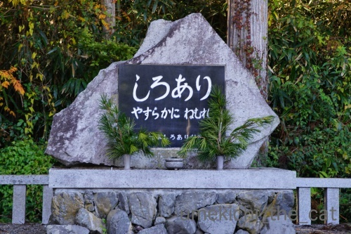

冬の気配を感じる、たこちゃん！？ [梅吉]
昼間ベランダで気持ちよく遊べるのは後２〜３週間でしょうか。
くりんくるんとひだまりを満喫しております＾＾

風が冷たく日差しも冬のものに変わってきた様に思います。
冬の足音でも聞こえましたか？

肌寒くなってあったかい冷蔵庫の上が再び定位置に。
最近はたこちゃんがお気に入りですw
（51秒です）
オチも何もない梅吉が遊ぶだけの動画なのでお時間のあるときにでもご覧くださいm(_ _)m
ちなみにたこちゃんはたこ焼きをひっくり返すピックの柄の部分です(*>艸<)
ピックにもいろいろある様で使いやすいという評価を信じて買ってみました。
たこちゃんが欲しかったわけじゃないもん。
紅葉を見に高野山へ。
我が家からは2時間くらいです。（直通特急に乗ればもっと早い）
時間はかかりますがアクセスは良いのですよ＾＾
雲ひとつない良い天気です。
山の紅葉は鮮やかですね＾＾
下界の我が家付近の茶ばんだ葉の色とは大違いですw
奥の院への参道。
以前訪れたときには一の橋から奥の院まで、約2キロ近くの参道を歩いたのですが
今回は奥の院までバスで直行。
バス停を降りてからでも参道の神聖な雰囲気は味わえます。
徳川家康の次男結城秀康の霊廟です。
朽ちた感じに歴史と迫力を感じます・・・
ここでは宗派は問われないので戦国武将から歴史上の人物、著名人有名人
ロケットまでおびただしい数の供養塔が並びます。

しろあり供養もありました。
その他ウエシマコーヒー、ヤクルトの塔頭もありましたよ。
アデランスのものはなぜが外国人観光客（欧米系の方）が盛んに写真を撮っていました（笑
奥の院付近の紅葉。
御廟橋から先の燈籠堂・弘法大師御廟・奥の院は写真撮影禁止なので
写真はありません。
いまでも空海が暮らしていると言われているだけあり
（食事も1日２回供されています。）
神聖で幻想的な空間でした。
根本大塔付近の紅葉。
午後の柔らかい日差しが紅葉に透けてとっても綺麗でした。
歩き回ったら暑くなるだろうと薄着で行ったのですが寒かった・・・
登山ではないけれど山をなめてはいけませんね。

カフェオレ色の梅吉

梅吉 2023年8月10日 永眠


梅吉と出会った譲渡会

犬猫の理由なき殺処分ゼロ
妄想広告
UMEKICHI 光

爆発的に早い！
時々攻撃的！
Thanks to Mr.Boss365
爆発的に早い！
時々攻撃的！
Thanks to Mr.Boss365

ぜっっっっっっっっっっっっんりょく、で日向ぼっこですねｗｗｗ
気持ち良さそう♪
紅葉がずいぶん赤くなりましたね＾＾。
最後の１枚、とってもきれいです。好きな構図ー＾＾
by 猫毬 (2018-11-05 01:09)
ごろんごろん日向ぼっこ♪
気持ち良さそうです(*´ω｀*)
陽射しが貴重なものになる時期に
なってきましたね！！
タコさんとまったり遊び♪
寝転びながら遊ぶ姿もまた可愛いです！
紅葉キレイですねぇ～
我が家もそろそろ紅葉狩りに行かないと！
っていつもまったりし過ぎて
終わっていることが多いですが(;^_^A
by きぃ (2018-11-05 07:24)
しろありって？
あの、家の柱を食べちゃうしろあり？
供養するんですね＾＾；
by ぽちの輔 (2018-11-05 07:26)
タコちゃん、動画後半はちょっと飽きた？(^_^;)
高野山は小学校時代に林間学校として、
行ったきり、もう半世紀近く。。。(@_@)！
by よーちゃん (2018-11-05 08:12)
たこ焼きピックは関西では常備品なんですか? 梅吉さんのまったりした遊び方も良いです。
高野山はかなり広いのですね。見事な紅葉です。
by zombiekong (2018-11-05 10:53)
広~いベランダで日向ぼっこ、私も一緒にゴロンゴロンしたい♪
タコさん遊び、梅吉さんは優しいですね！
同じようなチョロ出し遊びをウチでもやりますが、こてつパ～ン！と全力猫パンチでオモチャを吹っ飛ばします(^▽^;)
なんでこうもガサツに育ったんだろう・・・親に似るのか？！(≧▽≦)
高野山、大阪人は小学校の林間学校で必ず行きます。
そしてそれ以来行く機会がとても少ない場所でもあります。
山の紅葉は美しいですね♪
by ゆきち (2018-11-05 12:45)
タコに魚をこすりつけたらニャンコちゃんはガブリと噛みつくかもね。
by 旅爺さん (2018-11-05 16:05)
タコさんを、ゆっくり出したり、思わせぶりに引っ込めたり。。。
梅吉さんに楽しく遊んでもらうべく、
人間たちの想い（錯綜）がココロに突き刺さります！(^^♪
遊んで（あげてる？）梅吉さんも、いい味出してますね。
タコさんピック。
はやり関西の方々は、マイ・タコ焼き器は必須なのでしょうねぇ。
ウチの田舎では、必須の調理器具。かあったかしら。。。
北海道は、やはり帽子型のジンギスカン鍋ですかねぇ？（ワクワク）
by morichan (2018-11-05 16:23)
たこちゃんと遊ぶ梅吉君。かわいいじゃーないですか(*^。^*)
横に置いたガラスのコップが猫柄だなぁなんてチェックしながら見ましたよ(*^_^*)
by palpal (2018-11-05 16:43)
梅吉さん日向ぼっこでゴロンゴロンですね！
たこさんと遊ぶ梅吉さんは冷蔵庫の上ですね、少し暖かいのでしょうか(^^)
by ma2ma2 (2018-11-05 18:18)
素晴らしい紅葉ですね。つい見とれてしまいました。
休みとおこずかいがあればなぁ〜
っていう願いを込めて、
ガブっといっときました！＾＾
by KENT0mg (2018-11-05 19:19)
こんにちは。訪問！！遅れました・・・
ベランダではなく高級ルーフバルコニーで寛ぐ感じ良いです。梅吉君！！光に当たり健康になる感じ？座り姿勢も決まっている！！
梅吉君、いい感じで冷蔵庫の上で寛いでますね！！YouTubの動画、噛んでこちらを見る感じがたまりません。やる気のない感じ？「やめろよー」みたいな雰囲気です。タイトルは、「猫もゆったり・ パナソニック冷蔵庫？」ブランドロゴが気になりました・・・・
高野山！！紅葉狩り！！貴族の楽しみを満喫してます！！
最後の紅葉写真！！綺麗です。紅葉（もみじ）の紅葉（こうよう）？
by Boss365 (2018-11-05 19:34)
梅吉さんの日向ぼっこ、宙に浮いたてでなのを掴みましたか？
静かな横顔の梅吉さん、冬の足音を聞いているようですね。
たこさんがお気に入りなのは、おかーさんの方だと思いました（笑）
梅吉さんに遊んでほしいのはちぃさんですね（笑）
ヤレヤレの目線、しっかと頂きです（笑）
by kiki (2018-11-05 19:49)
ひなたぼっこ梅さん、気持ちよさそう♪
たこ焼きグッズのたこちゃん（の、常備）、さすが本場です！
紅葉、綺麗ですね。こちらはまだまだです。
い・・・いろいろな供養等があるのですね。びっくり。^^;
by yes_hama (2018-11-05 20:30)
梅吉さん、見事な喜びの舞ですねぇ( ^ω^ )
日向ぼっこした梅吉さんはきっとお日様のカホリが♪( ´▽｀)
梅吉さん、たこちゃんとまったり遊んでますねぇ=(^.^)=
ちぃさん、本当は梅吉さんのために
このたこちゃんを選んだに違いないです（￣+ー￣）
by ニッキー (2018-11-05 20:38)
たこちゃんが欲しくて買ったんですね。
梅吉さんと遊びたかったので買ったんですね(^^;
そう思えて仕方ないです。ごめんなさい。
いずれにしても梅吉さんが喜んでよかった(^^)
by riverwalk (2018-11-05 22:10)
ベランダで日向ぼっこ気持ちよさそうだね～。
3枚目の写真。なんだかお澄ましした可愛いお顔してる(*^-^*)
しかもスタイルもいいです！
たこちゃんにちょいちょい！ガブガブ！
やっぱり動画っていいな～。たこちゃんもゲット出来て良かったね(≧▽≦)
by emi (2018-11-05 23:59)
全身いっぱいの砂浴び（笑）をして、気持ち良さそうです〜
写真で見る日差しも、夏のきつい光とは全然違いますね。
高野山は数年前に立ち寄りました。・・・が
車だったうえ、カメラ壊れて殆ど写真も撮れなかったし
胡麻豆腐を買うのが目的だったので、他のことは覚えていません^^;
（この旅の主目的はたま駅長でした）
自然を満喫って感じですね（*´∀｀*）
by Ja-Kou66 (2018-11-06 00:41)
梅吉さん、ゴロゴロかわいい～～^^
by ニコニコファイト (2018-11-06 07:01)
タコちゃん動画、最高ですよ(^^)
家の周りには半外猫が多いですが、先週末は天気が良かったのでみんな道路でゴロンゴロンしてました。
いよいよ秋が終わるな～って思いましたね。
by kou (2018-11-06 07:17)
日向ぼっこでごろんごろん～可愛い♪
寒くなってくると貴重ですね＾＾
タコさんにじゃれるとこを見て～こちらもまったり＾＾
高野山ですか！
ブラタモリの記憶が新しいですわ～歴史を感じますねえ。
アデランスの供養？！何を‥髪を？カツラを？ きっとガイドブックに載っているのかな＾＾；
by sana (2018-11-06 14:39)
おっちゃん？？誰だかわかりません^^
by ニコニコファイト (2018-11-07 07:01)
猫毬さん＞
猫たるもの、日差しには貪欲、全力投球でしょうか＾＾
ぐるんぐるん回りすぎて見ていて怖いくらいですw
日に透ける紅葉って綺麗ですよねー。
真夏のギラギラ日差しじゃこうは行きませんねw
きぃさん＞
日差しの強さも日の差し方も変わって来ましたよね！
私も梅吉と一緒に日向ぼっこしたい季節です＾＾
桜と違って紅葉は楽しめる時期が長いので
まだまだ楽しめますよー。
Leaちゃんと一緒に楽しむ紅葉、羨ましいです！！
ぽちの輔さん＞
害虫といえども殺生し続けると
そういう気持ちになるものなんでしょうか。
確か建主は「シロアリ駆除協会」みたいな団体でしたよw
よーちゃん＞
飽きて来たとみせかけてー、再度盛り上がったりしますw
まぁ、猫様なので行動は読めませんが(*>艸<)
小学生では高野山の良さはちっともわからないような・・・
せめて高校生くらいで出かけたいところですねw
zombiekongさん＞
関西に引っ越して来た時ホットプレートを新調したら
たこ焼きプレートがデフォルトで付いてました・・・
関西仕様！？
ホットプレートをお持ちのご家庭には
たこ焼きピックもあるはず！！
高野山はでっかい寺院の中に街があるという感じでしょうか。
ひろーいです。
関連施設を歩いて回るのはちょっと無理かなw
ゆきちさん＞
日向ぼっこ、気持ちよさそうなんですよー＾＾
紫外線さえ気にならなければ私も一緒にゴロゴロしたいですが
シミだらけになりそうなので自粛してますw
こてつくんはボクサーですもの！！パンチの威力は凄そうですね(^_－)☆
梅吉はパンチよりもがぶがぶ派。
最近はおもちゃよりもにんげんとプロレスしたり
追いかけっこするようが楽しいようです。
よーちゃんもおっしゃっていましたが
高野山は小学生の林間学校の地でもあるのですね・・・
幼いうちに本物を見せるのも大切ですが
小学生が高野山を堪能するのは無理ですよねーwww
旅爺さん＞
お魚ついていたらガブリ！で食べちゃいそうですw
梅吉、食い意地張っていますから・・・(⌒_⌒;
morichanさん＞
猫様に楽しんでもらえるように下僕もおもちゃの扱いには
日々苦労を重ねております！！
幼い頃は見せただけで遊んでくれましたが
最近は興味を引くように遊ばないと
「つまらんおひとや。。。」と冷たい目で見られますから；；
たこ焼きプレートはホットプレートを買ったら
デフォルトで付いて来ました・・・
これは関西仕様なんでしょうか！？
北海道でホットプレート買ってもジンギスカン鍋はついてこないのにー。
で、鉄の重くて収納に大変困るジンギスカン鍋ありました。
過去形なのは処分してしまったから・・・
味付きジンギも鍋より炭火焼の方が美味しいのですよ！
でも道産子の魂を捨ててしまった様な気もしております。。。
palpalさん＞
おお！気づかれましたね！！ニャンコのコップ＾＾
カルディで日本酒が入って売ってました。
可愛くて美味しい一石二鳥( ´艸｀)
ma2ma2さん＞
日光と同様冷蔵庫の上もぬくぬくしています＾＾
これからの時期ニャンコは温もりに貪欲になります！
KENT0mgさん＞
休みとおこづかい、それは人類の普遍的な問題ですね！！
人間が悩んでいても紅葉は色づく・・・
自然は偉大です＾＾
梅吉から景気付けのガブ返しをーw
Boss365さん＞
陽だまりが好きなのか、コンクリートが好きなのか
はたまた陽だまりでぬくまったコンクリートが好きなのか・・・
とにかく（気持ちの良い季節は）ルーフバルコニー（かっこいいw)
が大好きな梅吉です＾＾
調子に乗り始めると脱走経路を見つめるので
付き添う人間は気を抜けないのですけれどw
冷蔵庫の上にいる梅吉を撮ると必ずパナソニックのロゴが！
企業関係者なら良かったんですが残念ながら我が家と関連はなく(^_^;)
連絡して広告費の交渉してみようかしらwww
kikiさん＞
きっと宙に浮いた手は大きな夢をつかんだのでしょう(*>艸<)
梅吉の夢は？たこさんで遊んでもらうこと！？
それは私の夢・希望みたいですねーwww
たこさんのあたまをかぷっとしながら
「これでまんぞくかいな・・・」みたいなヤレヤレ目線じゃなくて
もっと一生懸命遊んでくれると嬉しいのですが(｡-_-｡)
yes_hamaさん＞
たこ焼きプレートは２枚ほど、その他たこ焼き関連品（笑）および
ピックは２本常備しておりますw
本場に来たからには！と鼻息荒く買い揃えましたよ(*>艸<)
たこ焼きは美味しいと言われている名店のよりも
自宅であつあつ作りたてが一番美味しいので
時々作ってます！＾＾
高野山の供養塔は人、からけもの、モノまで様々でした。
すべてのものに魂が宿ると考える日本人らしな、とも思いました。
ニッキーさん＞
日向ぼっこのほかほか具合とカホリを楽しみたいのですが・・・
喜びの舞の時はテンションが上がっているのか
触ろうとするとがぶがぶがぶがぶ(⌒_⌒;
たこちゃんは・・・ハッΣ(ﾟ◇ﾟ；)
無意識のうちに下僕の目線で選んでいたのですねー！！
riverwalkさん＞
いえいえ、どうやら無意識のうちに
「梅吉に喜んでもらえるのはどれかしら・・・」
という目線でピックを選んでいたようですwww
立派な下僕に慣れて嬉しいです0(≧▽≦)0
emiさん＞
ぼへぼへしたお顔しててもちょっと変わった物音がすると
途端におすましした顔になっちゃったりしてw
この時は冬の足音がしてたみたいですよ( ´艸｀)
最近動画が多くて手抜きっぽいかなぁなんて思ってたのですが・・・
喜んでもらえて良かった(≧▽≦)
動画じゃないと伝わらないこともあるのよね。
ジェイソンとフレディはハロウィンの夜交代でお出かけしてたのかな？
「俺たち怖いはずなのに今日は誰もびっくりしてくれなかった・・・」
「街中おばけだらけだよねw」なんて会話が聞こえて来そうで笑っちゃった。
おまけにおこたで寛いでるなんてー0(≧▽≦)0
Ja-Kou66さん＞
日差しを浴びてフカフカになった毛並みの手触りを楽しみたいのですが
ベランダでハイテンションになっている時はそうもいかずw
柔らかい日差しはニャンコにも気持ちが良いのでしょうねー＾＾
わざわざ胡麻豆腐のために高野山とは・・・
確かにお山で売っている胡麻豆腐は美味しいです！
スーパーの胡麻豆腐も好きですが
ごま味つけました！っぽい感じがしますよねw
高野山で餡麩（あんぷ）は召し上らなかったのかしら・・・
だとしたら残念！！
ニコニコファイトさん＞
思いっきりゴロゴロを楽しんでいましたよー＾＾
おっちゃんは永遠の謎になりそうですねw
kouさん＞
たこちゃん動画楽しんでいただけましたか＾＾
しょうちゃんはじめ半外猫のみなさんも
ぬくぬくの秋の日差しを楽しまれているご様子。
雪が降ったらゴロンゴロンもお預けになっちゃいますね。。。
sanaさん＞
これからは暖かな日差しが貴重になって来ますね＾＾
家の中に陽だまりができるのは午前中だけなので
梅吉もわかっていて楽しんでいるのかもしれません！
たくさんの供養塔、なぜこの供養塔を作ったのかを
碑に刻んで主張しているところもあれば
言葉少ないところもあり・・・
アデランスは多くを語らない供養塔でしたwww
by ちぃ (2018-11-07 20:43)
紅葉の季節ですねー
写真が綺麗ですね^ ^
タコちゃん...かわいい 笑
by ryang (2018-11-07 23:47)
ryangさん＞
紅葉は今が見頃でしょうか＾＾
桜よりも長く楽しめるのが良いですよね。
たこちゃんも梅吉も可愛いでしょ( ´艸｀)
by ちぃ (2018-11-09 19:16)